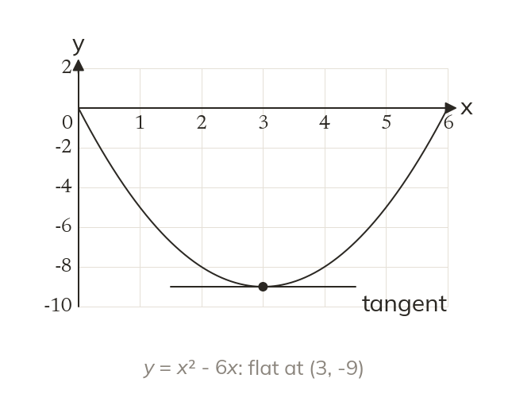

The gradient is zero at a turning point
At a turning point the tangent is flat, so the gradient is zero. Solving dydx = 0 finds it.
At the top or bottom of a curve the tangent is horizontal, so its gradient is zero. Stationary points are found by solving dydx = 0.